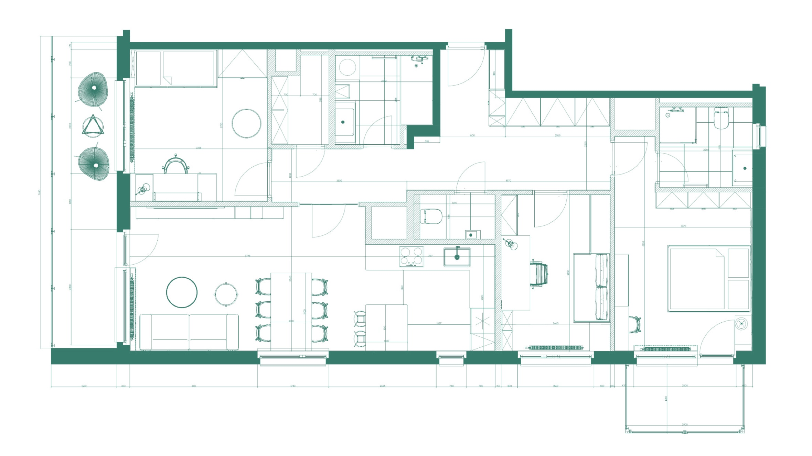
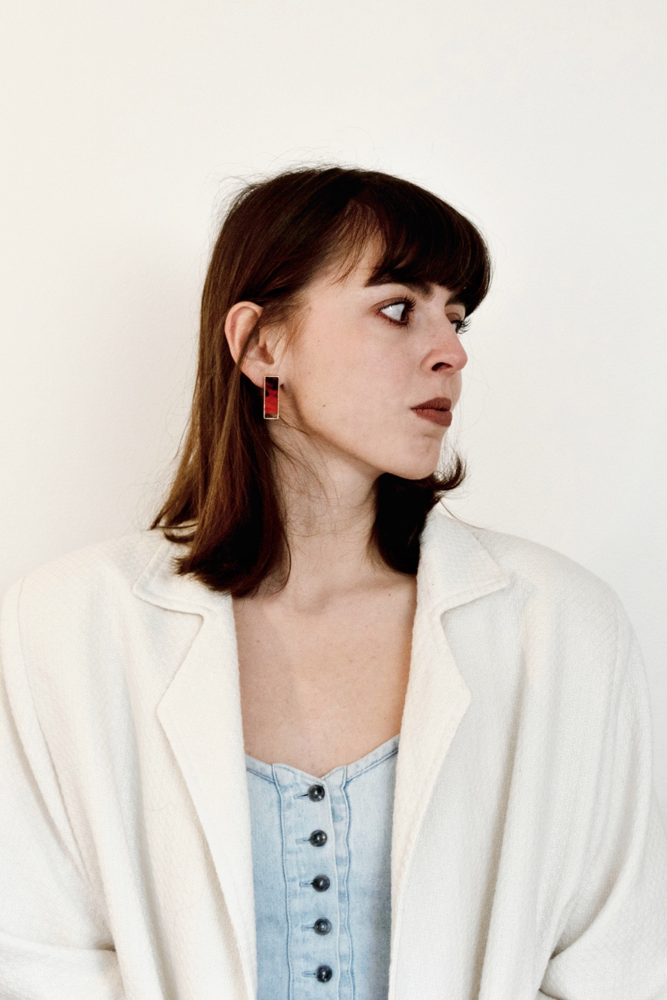

01 / komerční interiér
Little Master
Showroom nové divize Master & Master propojuje prezentaci dětského nábytku s promyšleným úložným prostorem.
Interiéry pro život, práci i značky

01
Každý prostor vzniká z konkrétního místa, potřeb a příběhu.
01 / komerční interiér
Showroom nové divize Master & Master propojuje prezentaci dětského nábytku s promyšleným úložným prostorem.
02 / studie bydlení
Studie rekonstrukce typového rodinného domu hledá současné dispozice a výraz, který respektuje charakter původní stavby.
02

Tvořím prostory pro lidi i značky. Ke každému projektu přistupuji individuálně a s respektem k těm, kteří v něm budou žít, pracovat nebo se setkávat.
Hledám rovnováhu mezi funkčností, estetikou a přirozeností. Skrze promyšlenou dispozici, práci se světlem a cit pro detail vzniká prostředí, které slouží dlouhodobě a působí samozřejmě.
Od první myšlenky po výsledný detail — pro nový domov, kancelář i komerční prostor.
03
{kind=link}
{kind=link}
{kind=link}
{kind=link}
{kind=link}
{kind=link}